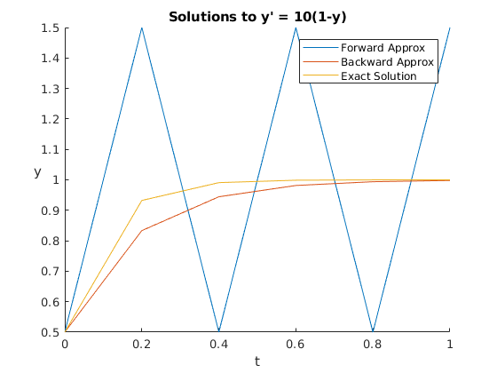

Zachary Kaplan
MATH 340 Assignment 13 4/27/18
Contents
Problem 1
% f where y' = f(t, y). f = @(t, y) 10*(1 - y); % g where y_{n+1} = g(t_n, y_n, h), solved explicity from backward euler's. g = @(t, y, h) (y + 10*h) / (1 + 10*h); % Initial point. [t0, y0] = deal(0, 1/2); % Final t value. T = 1; % Step size. h = 1/5; % Actual solution. y = @(t) 1 - exp(-10*t)/2; % Approximation. [tf, yf] = forward_euler(f, t0, y0, T, h); [tb, yb] = backward_euler(g, t0, y0, T, h); figure hold on plot(tf, yf); % Forward plot(tb, yb); % Backward plot(tf, y(tf)); % Exact legend('Forward Approx', 'Backward Approx', 'Exact Solution'); xlabel('t') ylabel('y') title('Solutions to y'' = 10(1-y)'); set(get(gca, 'ylabel'), 'rotation', 0); fprintf('Functions Used:\n'); dbtype forward_euler dbtype backward_euler
Functions Used:
1 function [tn, y] = forward_euler(f, t0, y0, T, h)
2 % FORWARD_EULER computers the forward euler approx for y(T) given
3 % that y' = f(t, y) and that y(t0) = y0 using a step size of
4 % h.
5
6 % Generate t's.
7 tn = t0:h:T;
8 if (tn(end) ~= T)
9 error('h does not divide (T - t0) evenly');
10 end
11
12 % Generate approximation.
13 y = zeros(size(tn));
14 y(1) = y0;
15 for i = 2:length(tn)
16 y(i) = y(i-1) + h*f(tn(i-1), y(i-1));
17 end
18
19 end
1 function [tn, y] = backward_euler(g, t0, y0, T, h)
2 % BACKWARD_EULER computers the backwards euler approx for y(T) where
3 % that y_{n+1} = g(t_n, y_n, h) and that y(t0) = y0 using a
4 % step size of h.
5
6 % Generate t's
7 tn = t0:h:T;
8 if tn(end) ~= T
9 error('h does not divide (T - t0) evenly')
10 end
11
12 % Generate approximation.
13 y = zeros(size(tn));
14 y(1) = y0;
15 for i = 2:length(tn)
16 y(i) = g(tn(i-1), y(i-1), h);
17 end
18
19 end
